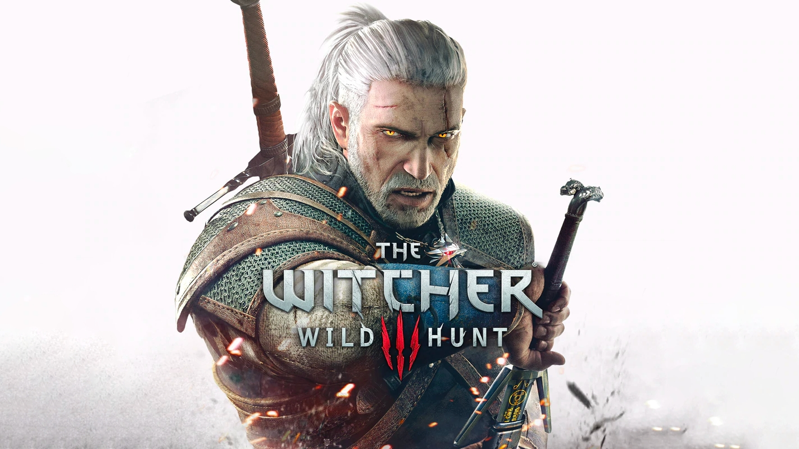
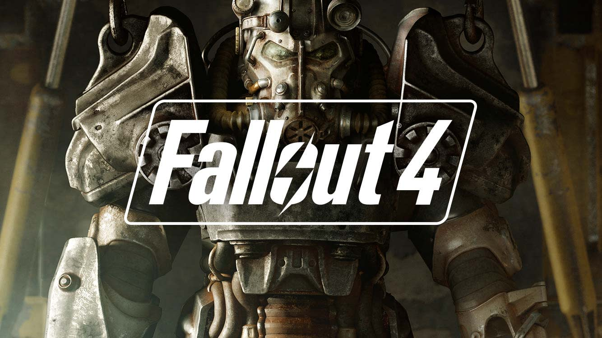

Witamy na stronie o grach komputerowych!
Nasza strona oferuje najnowsze informacje o najpopularniejszych grach komputerowych, recenzje, porady oraz wiele więcej. Zobacz, co nowego w świecie gier!
Popularne Gry
The Witcher 3: Wild Hunt
The Witcher 3: Wild Hunt to fabularna gra akcji, opracowana przez CD Projekt Red. Gra jest kontynuacją przygód wiedźmina Geralta z Rivii.
Czytaj więcejCyberpunk 2077

Cyberpunk 2077 to gra RPG, stworzona przez CD Projekt Red. Akcja gry toczy się w futurystycznym Night City, gdzie gracz wciela się w postać najemnika V.
Czytaj więcejFallout 4
Fallout 4 to gra RPG stworzona przez Bethesda Game Studios. Gracz wciela się w postać ocalałego z krypty, który przemierza postapokaliptyczny świat w poszukiwaniu swojego zaginionego syna.
Czytaj więcejAktualności
Nowa aktualizacja do Cyberpunk 2077
CD Projekt Red ogłosił nową aktualizację do Cyberpunk 2077, która wprowadza liczne poprawki i nowe funkcje.
Czytaj więcejFallout 4 otrzymuje nowy mod
Fanowska społeczność Fallout 4 wypuściła nowy mod, który dodaje do gry nową kampanię oraz mnóstwo dodatkowej zawartości.
Czytaj więcejO Nas
Jesteśmy grupą pasjonatów gier komputerowych, którzy postanowili stworzyć stronę dedykowaną miłośnikom wirtualnych światów. Naszym celem jest dostarczanie najświeższych informacji i recenzji oraz tworzenie miejsca, gdzie gracze mogą wymieniać się doświadczeniami.